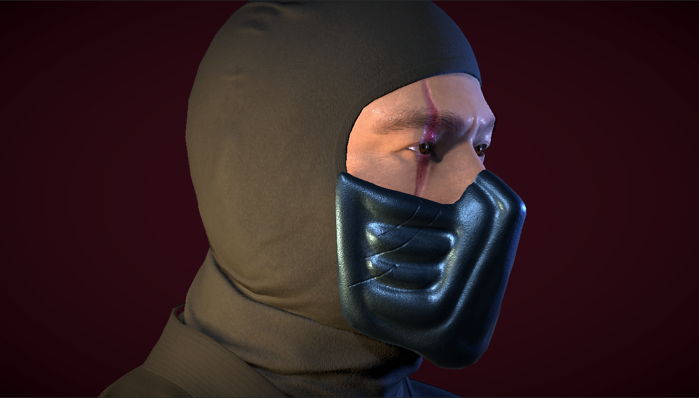
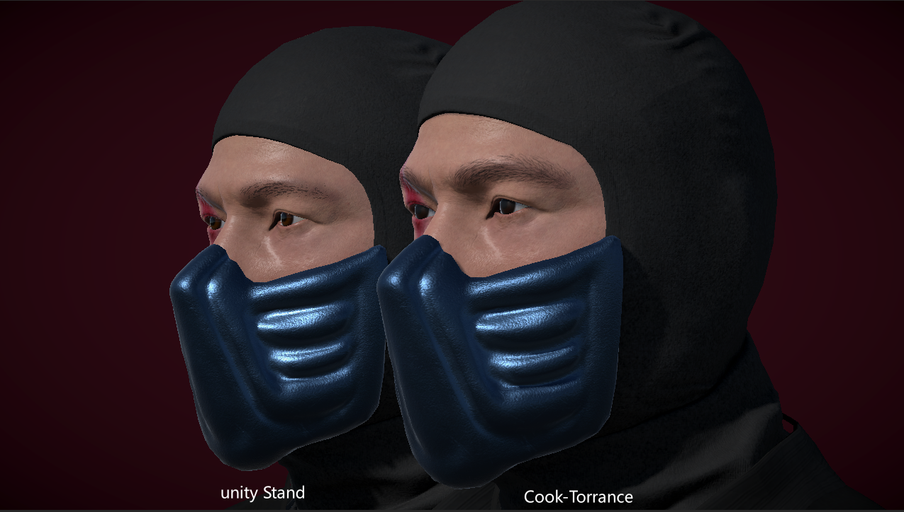
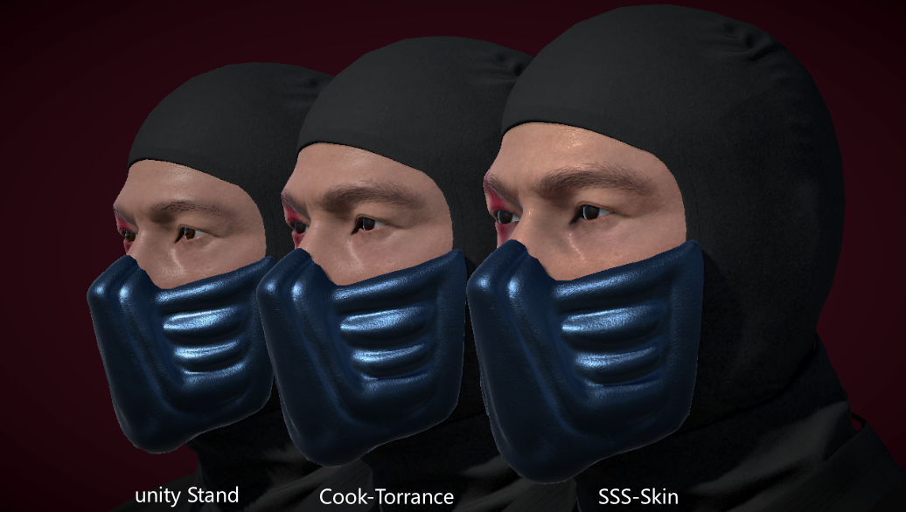
PBR和皮肤渲染
项目简介：写实渲染非常依赖材质的表现,PBR流程非常适合,作为皮肤,眼球,甚至后续所有的渲染框架,有必要提取一版自定义PBR,方便修改。
实现细节
1. 标准PBRPBR光照积分方程:
\[L_o(\boldsymbol{v}) = \int_{\Omega} f_r(\boldsymbol{l},\boldsymbol{v}) \, L_i(\boldsymbol{l}) \, (n\cdot \boldsymbol{l}) \,\boldsymbol{\mathrm{d}\omega}\]fr=BRDF核心光照函数,这里采用Cook-Torrance
\[f_r = f_{diffuse} + f_{spec}\]f diffuse漫反射公式
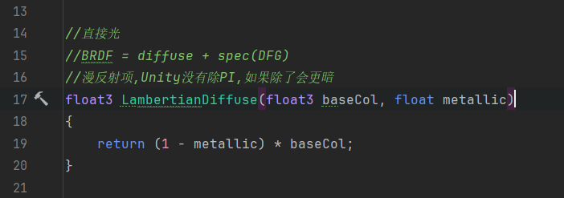
高光反射公式,主要求DFG
\[f_{spec} = \frac{DFG}{4(n\cdot l)(n\cdot v)}\]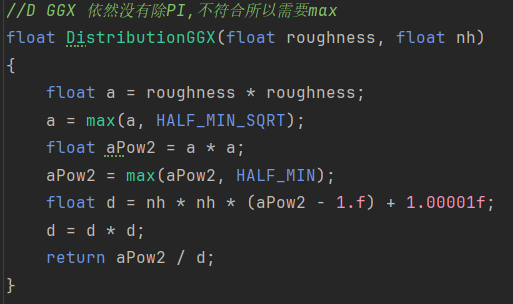
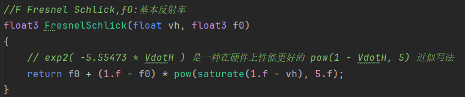
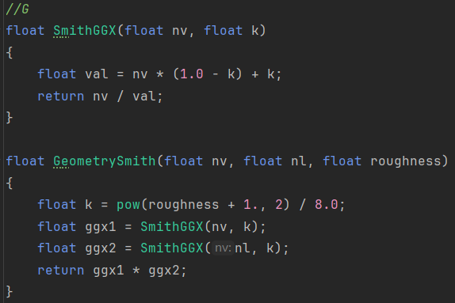
直接光有了,Unity中的间接光IBL也需要计算,相对简单,首先是间接光漫反射,就是unity球谐函数SH
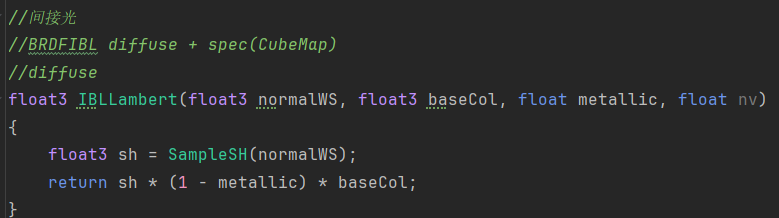
间接光高光反射相对麻烦,公式:
\[L_{specIBL} = \int_\Omega \frac{DFG}{4(n\cdot v)(n\cdot l)} L_i(\boldsymbol l) \,(n\cdot l) \mathrm d\omega\]实时计算相当复杂,Epic拆分近似公式,可以理解为颜色项预滤波CubeMap,而高光IntegrateBRDF则采样Lut或者拟合公式
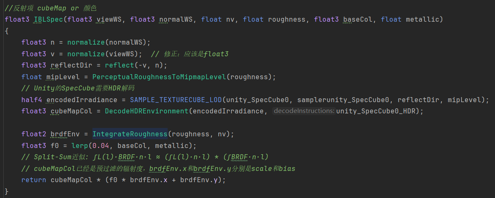
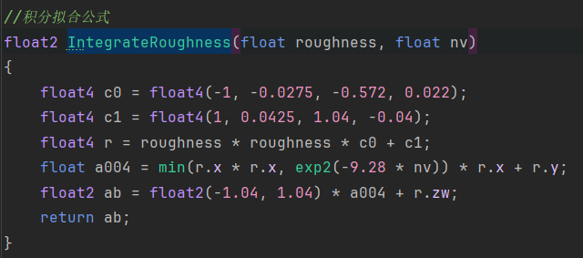
最后直接光和间接光叠加,就是基础的标准PBR流程
应用
标准PBR渲染,对金属,木头,塑料等等渲染效果较好,但是涉及皮肤,眼睛等等特殊光照方程,需要一定修改
Unity自带的PBR和常用的BRDF:Cook-Torrance几乎一致,只在高光项用近似函数替代了FG项,所以高光有非常细微的不同,模型的面罩为金属材质,表现还可以
2. 皮肤渲染
皮肤散射效果用SSS Lut模拟,替代原始PBR NL项,增加红润质感,叠加另一层细腻高光,模拟油脂层反射
3. 眼球渲染
眼球部分主要是虹膜折射的处理,视差贴图或者基于物理的视差
这里直接使用了简单的视差效果,UnityCG.cginc的版本,基于物理的视差相对麻烦,具体可以看另一篇,还原UE眼球效果
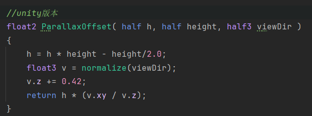
4. 阴影渲染
Unity阴影会采集整个场景的深度进行比较,分配给人物的占比较少,当模型移动时抖动较大,即使开启CSM,效果也不太理想,且CSM在URP下仅对平行光作用,独立渲染关键角色的阴影可以在角色展示等界面提供更好的阴影
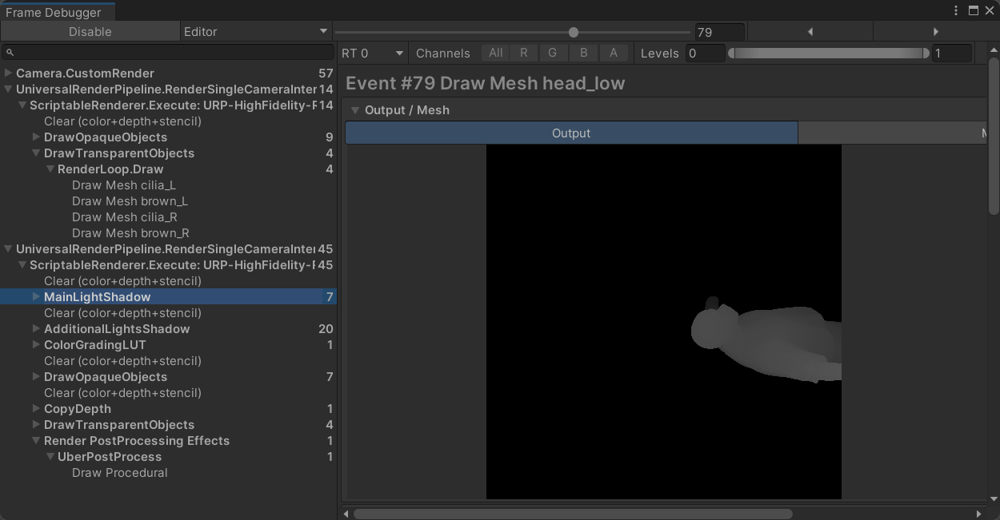
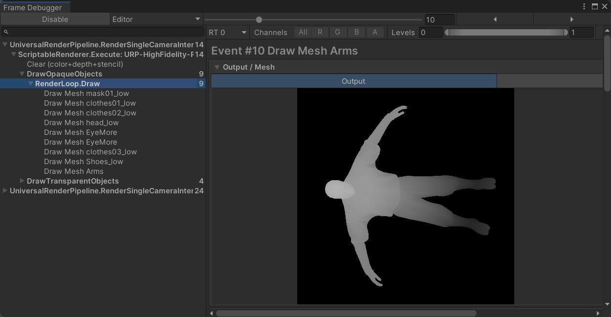
核心实现是计算需要阴影单位的包围盒,根据包围盒创建视椎体,将视椎体内深度记录到RT,之后就是常规阴影对比流程,在视椎体空间对比NDC Z深度
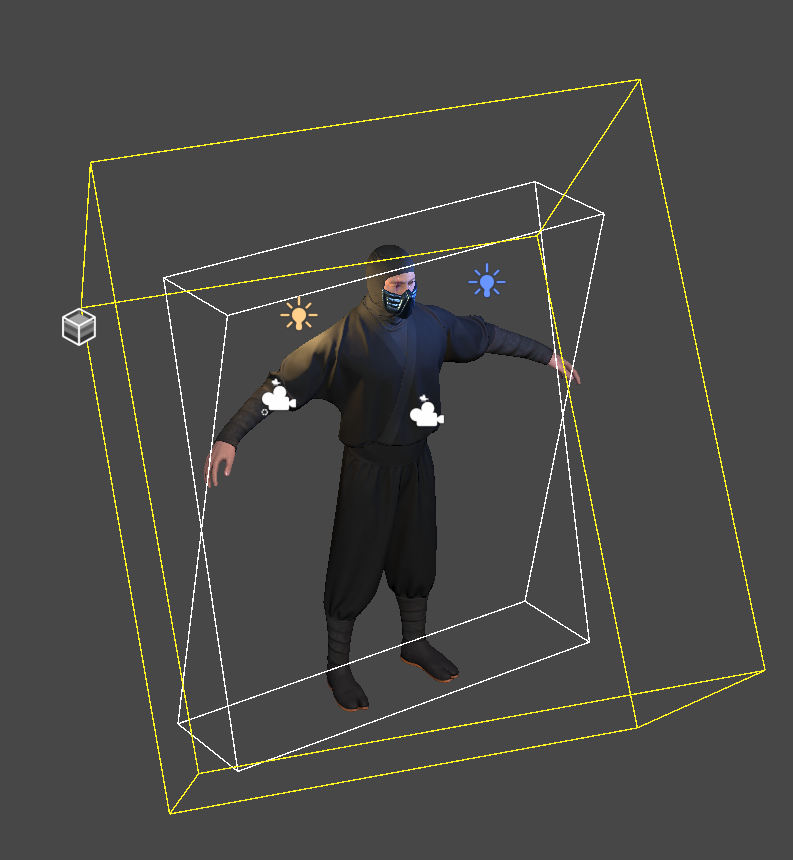
视频动态效果明显
缺点是要给角色多加一张RT来渲染,但是分辨率可控,在角色展示等比较独立的界面,近距离时开启比较合适